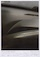
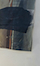

Navn: Peter Højlund Palluth *1992, Randers, Denmark
Lives and works in Copenhagen
Member of: Jennifee-See Alternate
Education
2019-now Student at The Royal Danish Academy of Fine Arts, Copenhagen, Denmark
Exhibitions / CV
| Year | Title | Info | Poster | Location | Documentation |
|---|---|---|---|---|---|
| June 2025 | BILLS | Solo. The exhibition was shown as a part of Rundgang 2025 |
Maria's Kiosk, Holbergsgade 9, 1054 København | Soon | |
| June 2025 | DRIVING | Solo. Interview with Christiania TV about the exhibition |
 | Månefiskeren, Christiania, Copenhagen | Download pdf (8MB) |
| April–May 2025 | Walk, watch, whistle | Co-curated with Julia Laszczka. Walk, Watch, Whistle presents a retrospective exhibition featuring selected works from Peter Olsen’s oeuvre, along with previously unpublished footage. His artistic practice spanned from 2003 to 2022. |
 |
Jennifee-See Alternate, Otto Busses Vej 33, København SV | Here |
| April 2024 | Milky Dream | Duo The exhibition was made in collaboration with Julia Laszczka |
Q at the The Royal Danish Academy of Fine Arts | Here | |
| May 2023 | fixed assembly | Duo The exhibition was made in collaboration with Julia Laszczka |
Ping Pong Basement at the The Royal Danish Academy of Fine Arts | Here |